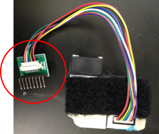

Materials and equipment needed (per sensor, unless otherwise noted)
Plantower PMS3003 sensor - note that you will want to make sure that the Plantower comes with a green
wiring switch board (see photo) otherwise it can be difficult to connect to the PCB; many of the Plantowers being sold online do not come with this piece

Barrel jack-to-USB cord (for power supply)
USB-to-wall adaptor if the sensor is going to be plugged in, otherwise it can be powered via battery plugged in using the barrel jack-to-USB cord
The PCB and all of the following parts in the quantities listed (see next page) – these are the parts we had the company solder on, but you could solder them on yourself